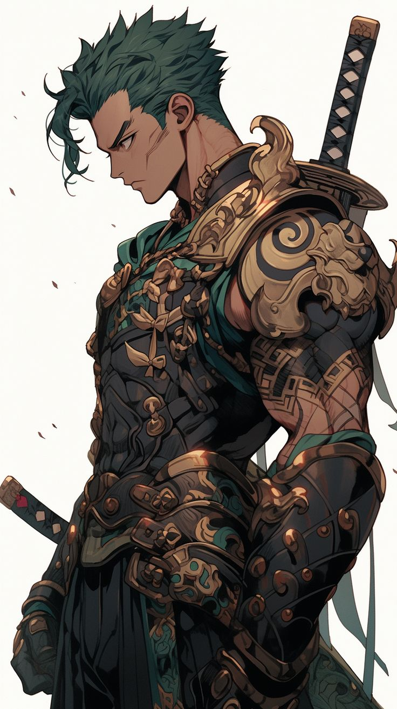
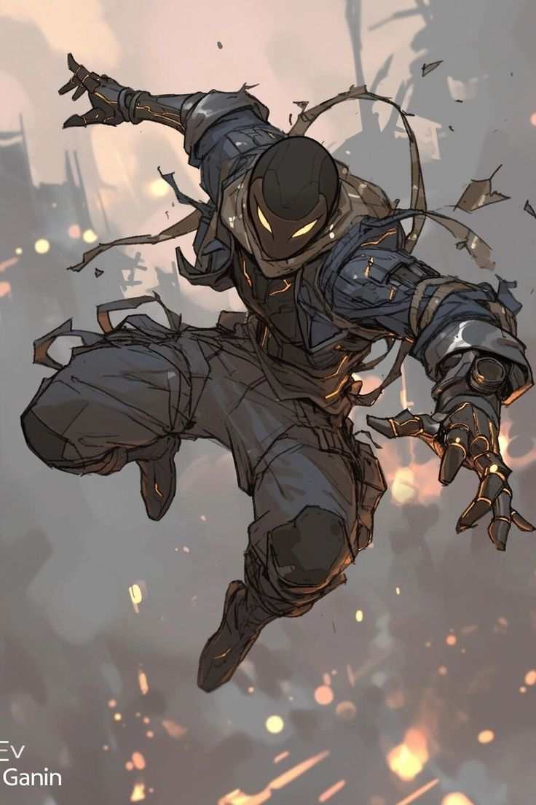
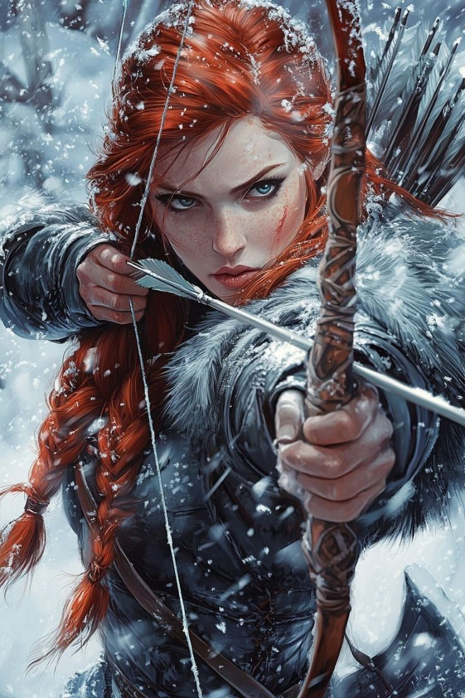
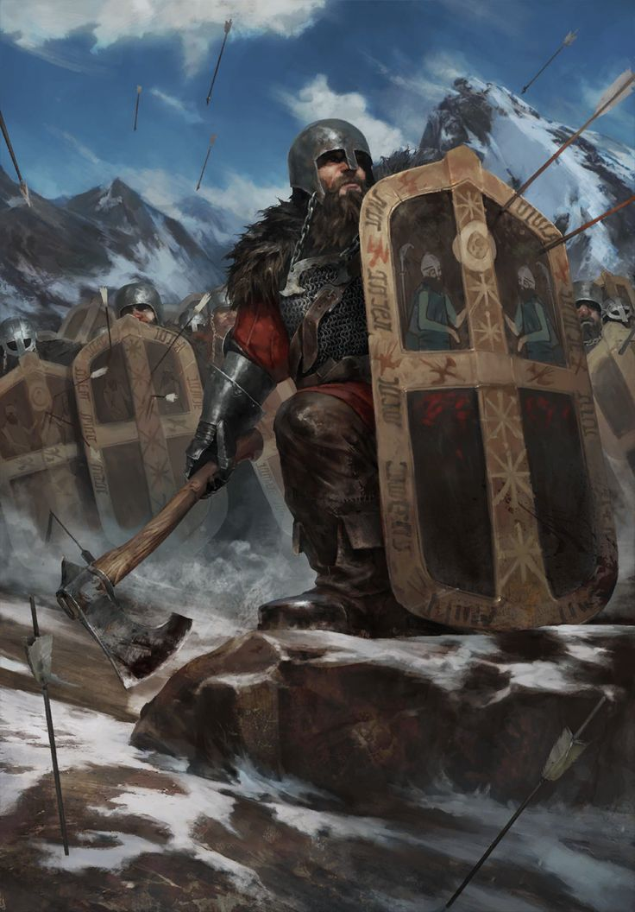

Dimensão Arcana
Pontos e distribuição
O mestre sempre irá determinar quantos serão os pontos iniciais para a criação da ficha. Os jogadores têm a possibilidade de adquirir desvantagens, que são características negativas do personagem — limitações físicas, psicológicas, sociais ou sobrenaturais — e que, no sistema 3D&T, oferecem pontos adicionais na criação da ficha quando selecionadas com sabedoria.
Cada desvantagem possui um valor em pontos negativos (geralmente -1 ou -2), e o jogador pode usá-los para fortalecer outras áreas do personagem, como adquirir novas vantagens, perícias ou aumentar seus atributos. No entanto, é importante lembrar que nem todas as desvantagens valem a pena apenas pelos pontos: muitas impõem limitações sérias durante o jogo, exigindo interpretação coerente e impactando diretamente nas ações e nas possibilidades do personagem.
A sequência recomendada é: primeiro distribuir os pontos nos atributos, depois escolher as vantagens e perícias, e por fim avaliar se vale a pena adquirir alguma desvantagem, tanto para composição narrativa quanto para ganho mecânico.
Como funciona a distribuição da Habilidade
Diferente de outros atributos, a Habilidade tem um custo especial na hora da criação do personagem. Isso significa que, dependendo do valor que o jogador quiser alcançar, o número de pontos necessários vai mudando.

Até o valor 3, a conta é simples: cada ponto em Habilidade custa exatamente 1 ponto de criação. Ou seja, para ter Habilidade 1, você gasta 1 ponto; Habilidade 2 custa 2 pontos; e Habilidade 3, 3 pontos.
A partir do valor 4, o custo começa a subir. Para colocar Habilidade 4, você precisa gastar 2 pontos adicionais. Para chegar ao nível 5, o custo é de 3 pontos; e para alcançar o nível 6, são necessários 4 pontos. Essa lógica continua se quiser ir além.
RESISTÊNCIA: Definindo pontos de vida e de mana
O atributo RESISTÊNCIA determina quantos pontos de vida (PV) e pontos de mana (PM) os personagens dos jogadores terão.
Normalmente, esses valores já vêm definidos no manual do aventureiro, especialmente quando o jogador escolhe uma classe.
Nos pacotes das classes, já existe um multiplicador pré-estabelecido para os pontos de mana (PM) e para os pontos de vida (PV).
Quando o manual não deixa claro, o multiplicador padrão é 5.
Importante: se o jogador não colocar nenhum ponto em RESISTÊNCIA, o PM será 0 e o PV será 1. Isso acontece porque, mesmo que a resistência seja zero e o cálculo dê zero, o personagem precisa ter pelo menos 1 ponto de vida para estar "vivo" no jogo.
FORÇA: Capacidade física e dano corpo a corpo
O atributo FORÇA representa a capacidade física do personagem. Ele define quanto peso ele pode carregar, levantar ou empurrar, além de influenciar diretamente o dano de ataques corpo a corpo.
Toda vez que o personagem precisar realizar um teste que envolva esforço físico ou força bruta, como levantar algo muito pesado ou arrombar uma porta com um golpe,
será esse atributo que entrará em ação.
PdF: Ataques à distância
O atributo PdF (Ponto de Fogo) representa a capacidade do personagem de causar dano à distância, usando armas como arcos, bestas, estilingues ou magias que atingem alvos distantes.

Para conseguir fazer qualquer ataque à distância, o personagem precisa ter pelo menos 1 ponto em PdF. Se esse atributo estiver com valor zero, ele não pode usar nenhum tipo de ataque de longo alcance.
Além disso, quanto maior for o valor de PdF, maior será o dano causado nos inimigos à distância. Esse atributo também ajuda o personagem a acertar alvos que estão mais longe com mais precisão.
Atributo Armadura: Defesa passiva do personagem
O atributo Armadura está ligado à defesa passiva do personagem, ou seja, à proteção que ele tem mesmo quando não consegue reagir a um ataque.

Se o personagem for pego desprevenido e não puder fazer um teste de defesa, o valor da Armadura ainda vai ajudar a diminuir o dano que ele recebe.
O jogador pode fazer um teste de armadura para tentar se defender melhor, mas esse teste é sempre considerado bem-sucedido, sem precisar de uma rolagem especial.
Quando o cálculo da Armadura for feito, o valor dela será subtraído do dano final. Se esse valor for igual ou maior que o dano, o personagem consegue bloquear o ataque completamente.